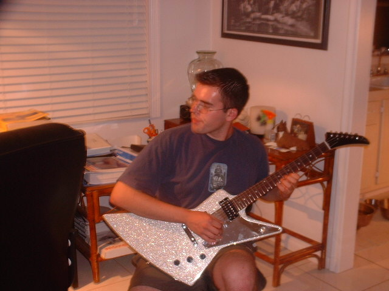

Florida, 2001. That's Disco Stu.
I have been playing guitar since I was twelve years old, having saved up the money by working on my parents' stableyard in Kildare. Over the years I have owned more guitars than I strictly needed, at a rate my bank account has never fully endorsed.
This site documents the instruments that have passed through my hands over thirty years — where they came from, what makes them interesting, and why some of them are still here. Several were bought in Florida. One was bought in Thailand and carried across Southeast Asia as hand luggage. One belonged to my cousin Wesley.
Writing each story down forces a kind of honesty about why I actually bought all of these and what they mean.
I do not buy for investment. I buy instruments that have a voice I cannot get somewhere else, or that have a history I find interesting, or that I happened to find at a moment when I was not thinking clearly about money. The overlap between those three categories is where most of these guitars live.
A personal side project built with the help of AI tools, specifically Claude, which I used to design and code the entire site from scratch. I am a strategy and operations professional by trade, not a developer, so this was partly a genuine passion project and partly an experiment in what is now possible with AI-assisted development.
The site is plain HTML, CSS and JavaScript — no framework, no database, hosted as static files. Each guitar's data lives in a single JS file. Simple to maintain, fast to load, and something I can actually understand and modify myself.